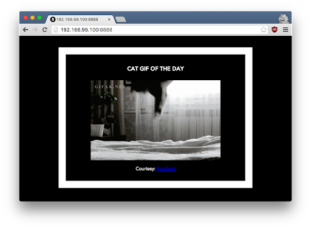

Discover Docker
Note
Checkpoint: call us to check your results (don’t stay blocked on a checkpoint if we are busy, we can check ⅔ checkpoints at the same time)
Question
Point to document/report
Tip
Interesting information
Setup
Prerequisites
There are no specific skills needed for this tutorial beyond a basic comfort with the command line and using a text editor.
Prior experience in developing web applications will be helpful but is not required. As you proceed further along the tutorial, we'll make use of https://cloud.docker.com/.
Setting up your computer
Getting all the tooling setup on your computer can be a daunting task, but getting Docker up and running on your favorite OS has become very easy.
The getting started guide on Docker has detailed instructions for setting up Docker on Mac, Linux and Windows
If you're using Docker for Windows make sure you have shared your drive.
Important note If you're using an older version of Windows or MacOS you may need to use Docker Machine instead.
All commands work in either bash or Powershell on Windows
Once you are done installing Docker, test your Docker installation by running the following:
docker run hello-world
Unable to find image 'hello-world:latest' locally
latest: Pulling from library/hello-world
03f4658f8b78: Pull complete
a3ed95caeb02: Pull complete
Digest: sha256:8be990ef2aeb16dbcb9271ddfe2610fa6658d13f6dfb8bc72074cc1ca36966a7
Status: Downloaded newer image for hello-world:latest
Hello from Docker.
...
This message shows that your installation appears to be working correctly.
Running your first container
Now that you have everything setup, it's time to get our hands dirty.
In this section, you are going to run an Alpine Linux container (a lightweight linux distribution) on your system and get a taste of the docker run command.
To get started, let's run the following in our terminal:
Note
Depending on how you've installed docker on your system, you might see a permission denied error after running the above command. Try the commands from the Getting Started tutorial to verify your installation. If you're on Linux, you may need to prefix your docker commands with sudo. Alternatively you can create a docker group to get rid of this issue.
The pull command fetches the alpine image from the Docker registry and saves it in our system. You can use the docker images command to see a list of all images on your system.
$ docker images
REPOSITORY TAG IMAGE ID CREATED VIRTUAL SIZE
alpine latest c51f86c28340 4 weeks ago 1.109 MB
hello-world latest 690ed74de00f 5 months ago 960 B
1.1 Docker Run
Great! Let's now run a Docker container based on this image. To do that you are going to use the docker run command.
$ docker run alpine ls -l
total 48
drwxr-xr-x 2 root root 4096 Mar 2 16:20 bin
drwxr-xr-x 5 root root 360 Mar 18 09:47 dev
drwxr-xr-x 13 root root 4096 Mar 18 09:47 etc
drwxr-xr-x 2 root root 4096 Mar 2 16:20 home
drwxr-xr-x 5 root root 4096 Mar 2 16:20 lib
......
......
What happened? Behind the scenes, a lot of stuff happened. When you call run:
1. The Docker client contacts the Docker daemon.
-
The Docker daemon checks local store if the image (alpine in this case) is available locally, and if not, downloads it from Docker Store. (Since we have issued
docker pull alpinebefore, the download step is not necessary) -
The Docker daemon creates the container and then runs a command in that container.
-
The Docker daemon streams the output of the command to the Docker client
When you run docker run alpine, you provided a command (ls -l), so Docker started the command specified and you saw the listing.
Let's try something more exciting.
OK, that's some actual output. In this case, the Docker client dutifully ran the echo command in our alpine container and then exited it. If you've noticed, all of that happened pretty quickly. Imagine booting up a virtual machine, running a command and then killing it. Now you know why they say containers are fast!
Try another command.
Wait, nothing happened! Is that a bug? Well, no. These interactive shells will exit after running any scripted commands, unless they are run in an interactive terminal - so for this example to not exit, you need todocker run -it alpine /bin/sh .
You are now inside the container shell and you can try out a few commands like ls -l, uname -a and others. Exit out of the container by giving the exit command.
Ok, now it's time to see the docker ps command. The docker ps command shows you all containers that are currently running.
docker ps -a
$ docker ps -a
CONTAINER ID IMAGE COMMAND CREATED STATUS PORTS NAMES
36171a5da744 alpine "/bin/sh" 5 minutes ago Exited (0) 2 minutes ago fervent_newton
a6a9d46d0b2f alpine "echo 'hello from alp" 6 minutes ago Exited (0) 6 minutes ago lonely_kilby
ff0a5c3750b9 alpine "ls -l" 8 minutes ago Exited (0) 8 minutes ago elated_ramanujan
c317d0a9e3d2 hello-world "/hello" 34 seconds ago Exited (0) 12 minutes ago stupefied_mcclintock
What you see above is a list of all containers that you ran. Notice that the STATUS column shows that these containers exited a few minutes ago. You're probably wondering if there is a way to run more than just one command in a container. Let's try that now:
$ docker run -it alpine /bin/sh
/ # ls
bin dev etc home lib linuxrc media mnt proc root run sbin sys tmp usr var
/ # uname -a
Linux 97916e8cb5dc 4.4.27-moby #1 SMP Wed Oct 26 14:01:48 UTC 2016 x86_64 Linux
Running the run command with the -it flags attaches us to an interactive tty in the container. Now you can run as many commands in the container as you want. Take some time to run your favorite commands.
Tip
run -it is a very useful command to debug at the lowest level a container.
That concludes a whirlwind tour of the docker run command which would most likely be the command you'll use most often. It makes sense to spend some time getting comfortable with it. To find out more about run, use docker run --help to see a list of all flags it supports. As you proceed further, we'll see a few more variants of docker run.
1.2 Terminology
In the last section, you saw a lot of Docker-specific jargon which might be confusing to some. So before you go further, let's clarify some terminology that is used frequently in the Docker ecosystem.
- Images - The file system and configuration of our application which are used to create containers. To find out more about a Docker image, run
docker inspect alpine. In the demo above, you used thedocker pullcommand to download the alpine image. When you executed the commanddocker run hello-world, it also did adocker pullbehind the scenes to download the hello-world image. - Containers - Running instances of Docker images — containers run the actual applications. A container includes an application and all of its dependencies. It shares the kernel with other containers, and runs as an isolated process in user space on the host OS. You created a container using
docker runwhich you did using the alpine image that you downloaded. A list of running containers can be seen using thedocker pscommand. - Docker daemon - The background service running on the host that manages building, running and distributing Docker containers.
- Docker client - The command line tool that allows the user to interact with the Docker daemon.
- Docker Store - A registry of Docker images, where you can find trusted and enterprise ready containers, plugins, and Docker editions. You'll be using this later in this tutorial.
2.0 Webapps with Docker
Great! So you have now looked at docker run, played with a Docker container and also got the hang of some terminology. Armed with all this knowledge, you are now ready to get to the real stuff — deploying web applications with Docker.
2.1 Run a static website in a container
Note
Code for this section is in this repo in the static-site directory
Let's start by taking baby-steps. First, we'll use Docker to run a static website in a container. The website is based on an existing image. We'll pull a Docker image from Docker Store, run the container, and see how easy it is to set up a web server.
The image that you are going to use is a single-page website that was already created for this demo and is available on the Docker Store as dockersamples/static-site.
You can download and run the image directly in one go using docker run as follows.
Note
The current version of this image doesn't run without the -d flag. The -d flag enables detached mode, which detaches the running container from the terminal/shell and returns your prompt after the container starts. We are debugging the problem with this image but for now, use -d even for this first example.
Tip
-d is a very useful option.
So, what happens when you run this command?
Since the image doesn't exist on your Docker host, the Docker daemon first fetches it from the registry and then runs it as a container.
Now that the server is running, do you see the website? What port is it running on? And more importantly, how do you access the container directly from our host machine?
Actually, you probably won't be able to answer any of these questions yet! ☺ In this case, the client didn't tell the Docker Engine to publish any of the ports, so you need to re-run the docker run command to add this instruction.
Let's re-run the command with some new flags to publish ports and pass your name to the container to customize the message displayed. We'll use the -d option again to run the container in detached mode.
First, stop the container that you have just launched. In order to do this, we need the container ID.
Since we ran the container in detached mode, we don't have to launch another terminal to do this. Run docker ps to view the running containers.
$ docker ps
CONTAINER ID IMAGE COMMAND CREATED STATUS PORTS NAMES
a7a0e504ca3e dockersamples/static-site "/bin/sh -c 'cd /usr/" 28 seconds ago Up 26 seconds 80/tcp, 443/tcp stupefied_mahavira
Check out the CONTAINER ID column. You will need to use this CONTAINER ID value, a long sequence of characters, to identify the container you want to stop, and then to remove it. The example below provides the CONTAINER ID on our system; you should use the value that you see in your terminal.
Note
A cool feature is that you do not need to specify the entire CONTAINER ID. You can just specify a few starting characters and if it is unique among all the containers that you have launched, the Docker client will intelligently pick it up.
Now, let's launch a container in detached mode as shown below:
$ docker run --name static-site -e AUTHOR="Your Name" -d -P dockersamples/static-site
e61d12292d69556eabe2a44c16cbd54486b2527e2ce4f95438e504afb7b02810
In the above command:
-dwill create a container with the process detached from our terminal-Pwill publish all the exposed container ports to random ports on the Docker host-eis how you pass environment variables to the container.--nameallows you to specify a container nameAUTHORis the environment variable name andYour Nameis the value that you can pass.
Now you can see the ports by running the docker port command.
If you are running Docker for Mac, Docker for Windows, or Docker on Linux, you can open http://localhost:[YOUR_PORT_FOR 80/tcp]. For our example this is http://localhost:32773.
You can now open http://localhost:[YOUR_PORT_FOR 80/tcp] to see your site live! For our example, this is: http://192.168.99.100:32773.
You can also run a second webserver at the same time, specifying a custom host port mapping to the container's webserver.
To deploy this on a real server you would just need to install Docker, and run the above docker command (as in this case you can see the AUTHOR is Docker which we passed as an environment variable).
Now that you've seen how to run a webserver inside a Docker container, how do you create your own Docker image? This is the question we'll explore in the next section.
But first, let's stop and remove the containers since you won't be using them anymore.
Let's use a shortcut to remove the second site:
Tip
rm -f is a very useful option
Run docker ps to make sure the containers are gone.
2.2 Docker Images
In this section, let's dive deeper into what Docker images are. You will build your own image, use that image to run an application locally, and finally, push some of your own images to Docker Cloud.
Docker images are the basis of containers. In the previous example, you pulled the dockersamples/static-site image from the. registry and asked the Docker client to run a container based on that image. To see the list of images that are available locally on your system, run the docker images command.
$ docker images
REPOSITORY TAG IMAGE ID CREATED SIZE
dockersamples/static-site latest 92a386b6e686 2 hours ago 190.5 MB
nginx latest af4b3d7d5401 3 hours ago 190.5 MB
python 2.7 1c32174fd534 14 hours ago 676.8 MB
postgres 9.4 88d845ac7a88 14 hours ago 263.6 MB
containous/traefik latest 27b4e0c6b2fd 4 days ago 20.75 MB
node 0.10 42426a5cba5f 6 days ago 633.7 MB
redis latest 4f5f397d4b7c 7 days ago 177.5 MB
mongo latest 467eb21035a8 7 days ago 309.7 MB
alpine 3.3 70c557e50ed6 8 days ago 4.794 MB
java 7 21f6ce84e43c 8 days ago 587.7 MB
Above is a list of images that I've pulled from the registry and those I've created myself (we'll shortly see how). You will have a different list of images on your machine. The TAG refers to a particular snapshot of the image and the ID is the corresponding unique identifier for that image.
For simplicity, you can think of an image akin to a git repository - images can be committed with changes and have multiple. versions. When you do not provide a specific version number, the client defaults to latest.
For example you could pull a specific version of ubuntu image as follows:
If you do not specify the version number of the image then, as mentioned, the Docker client will default to a version named latest.
So for example, the docker pull command given below will pull an image named ubuntu:latest :
To get a new Docker image you can either get it from a registry (such as the Docker Store) or create your own. There are hundreds of thousands of images available on Docker Store. You can also search for images directly from the command line using docker search.
An important distinction with regard to images is between base images and child images.
- Base images are images that have no parent images, usually images with an OS like ubuntu, alpine or debian.
- Child images are images that build on base images and add additional functionality. Another key concept is the idea of official images and user images. (Both of which can be base images or child images.)
- Official images are Docker sanctioned images. Docker, Inc. sponsors a dedicated team that is responsible for reviewing and publishing all Official Repositories content. This team works in collaboration with upstream software maintainers, security experts, and the broader Docker community. These are not prefixed by an organization or user name. In the list of images above, the
python,node,alpineandnginximages are official (base) images. To find out more about them, check out the Official Images Documentation. - User images are images created and shared by users like you. They build on base images and add additional functionality. Typically these are formatted as
user/image-name. Theuservalue in the image name is your Docker Store user or organization name.
2.3 Create your first image
Now that you have a better understanding of images, it's time to create your own. Our main objective here is to create an image that sandboxes a small Flask application.
The goal of this exercise is to create a Docker image which will run a Flask app.
We'll do this by first pulling together the components for a random cat picture generator built with Python Flask, then dockerizing it by writing a Dockerfile. Finally, we'll build the image, and then run it.
2.3.1 Create a Python Flask app that displays random cat pix.
For the purposes of this workshop, we've created a fun little Python Flask app that displays a random cat .gif every time it is loaded - because, you know, who doesn't like cats?
Start by creating a directory called flask-app where we'll create the following files:
- app.py
- requirements.txt
- templates/index.html
- Dockerfile
Make sure to cd flask-app before you start creating the files, because you don't want to start adding a whole bunch of other random files to your image.
app.py
Create the app.py with the following content:
from flask import Flask, render_template
import random
app = Flask(__name__)
# list of cat images
images = [
"https://c.tenor.com/GTcT7HODLRgAAAAM/smiling-cat-creepy-cat.gif",
"https://media0.giphy.com/media/10dU7AN7xsi1I4/giphy.webp?cid=ecf05e47gk63rd81vzlot57qmebr7drtgf6a3khmzvjsdtu7&rid=giphy.webp&ct=g",
"https://media0.giphy.com/media/S6VGjvmFRu5Qk/giphy.webp?cid=ecf05e478yofpawrhffnnvb3sgjkos96vyfo5mtqhds35as6&rid=giphy.webp&ct=g",
"https://media3.giphy.com/media/JIX9t2j0ZTN9S/200w.webp?cid=ecf05e47gk63rd81vzlot57qmebr7drtgf6a3khmzvjsdtu7&rid=200w.webp&ct=g"
]
@app.route('/')
def index():
url = random.choice(images)
return render_template('index.html', url=url)
if __name__ == "__main__":
app.run(host="0.0.0.0")
requirements.txt
In order to install the Python modules required for our app, we need to create a file called requirements.txt and add the following line to that file:
templates/index.html
Create a directory called templates and create an index.html file in that directory with the following content in it:
<html>
<head>
<style type="text/css">
body {
background: black;
color: white;
}
div.container {
max-width: 500px;
margin: 100px auto;
border: 20px solid white;
padding: 10px;
text-align: center;
}
h4 {
text-transform: uppercase;
}
</style>
</head>
<body>
<div class="container">
<h4>Cat Gif of the day</h4>
<img src="{{url}}" />
<p><small>Courtesy: <a href="http://www.buzzfeed.com/copyranter/the-best-cat-gif-post-in-the-history-of-cat-gifs">Buzzfeed</a></small></p>
</div>
</body>
</html>
2.3.2 Write a Dockerfile
We want to create a Docker image with this web app. As mentioned above, all user images are based on a base image.
Since our application is written in Python, we will build our own Python image based on Alpine.
We'll do that using a Dockerfile.
A Dockerfile is a text file that contains a list of commands that the Docker daemon calls while creating an image. The Dockerfile contains all the information that Docker needs to know to run the app — a base Docker image to run from, location of your project code, any dependencies it has, and what commands to run at start-up.
It is a simple way to automate the image creation process. The best part is that the commands you write in a Dockerfile are almost identical to their equivalent Linux commands. This means you don't really have to learn new syntax to create your own Dockerfiles.
- Create a file called Dockerfile, and add content to it as described below.
We'll start by specifying our base image, using the FROM keyword:
- The next step usually is to write the commands of copying the files and installing the dependencies. But first we will install the Python pip package to the alpine linux distribution. This will not just install the pip package but any other dependencies too, which includes the python interpreter. Add the following RUN command next:
- Let's add the files that make up the Flask Application.
Install all Python requirements for our app to run. This will be accomplished by adding the lines:
Copy the files you have created earlier into our image by using COPY command.
- Specify the port number which needs to be exposed. Since our flask app is running on
5000that's what we'll expose.
- The last step is the command for running the application which is simply -
python ./app.py.
Use the CMD command to do that:
The primary purpose of CMD is to tell the container which command it should run by default when it is started.
- Verify your Dockerfile.
Our Dockerfile is now ready. This is how it looks:
# our base image
FROM alpine:3.6
# Install python and pip
RUN apk add --update py2-pip
# install Python modules needed by the Python app
COPY requirements.txt /usr/src/app/
RUN pip install --no-cache-dir -r /usr/src/app/requirements.txt
# copy files required for the app to run
COPY app.py /usr/src/app/
COPY templates/index.html /usr/src/app/templates/
# tell the port number the container should expose
EXPOSE 5000
# run the application
CMD ["python", "/usr/src/app/app.py"]
2.3.3 Build the image
Now that you have your Dockerfile, you can build your image.
The docker build command does the heavy-lifting of creating a docker image from a Dockerfile.
When you run the docker build command given below, make sure to replace <YOUR_USERNAME> with your username.
This username should be the same one you created when registering on Docker Cloud. If you haven't done that yet, please go ahead and create an account.
The docker build command is quite simple - it takes an optional tag name with the -t flag, and the location of the directory containing the Dockerfile - the . indicates the current directory:
$ docker build -t <YOUR_USERNAME>/myfirstapp .
Sending build context to Docker daemon 9.728 kB
Step 1 : FROM alpine:latest
---> 0d81fc72e790
Step 2 : RUN apk add --update py-pip
---> Running in 8abd4091b5f5
fetch http://dl-4.alpinelinux.org/alpine/v3.3/main/x86_64/APKINDEX.tar.gz
fetch http://dl-4.alpinelinux.org/alpine/v3.3/community/x86_64/APKINDEX.tar.gz
(1/12) Installing libbz2 (1.0.6-r4)
(2/12) Installing expat (2.1.0-r2)
(3/12) Installing libffi (3.2.1-r2)
(4/12) Installing gdbm (1.11-r1)
(5/12) Installing ncurses-terminfo-base (6.0-r6)
(6/12) Installing ncurses-terminfo (6.0-r6)
(7/12) Installing ncurses-libs (6.0-r6)
(8/12) Installing readline (6.3.008-r4)
(9/12) Installing sqlite-libs (3.9.2-r0)
(10/12) Installing python (2.7.11-r3)
(11/12) Installing py-setuptools (18.8-r0)
(12/12) Installing py-pip (7.1.2-r0)
Executing busybox-1.24.1-r7.trigger
OK: 59 MiB in 23 packages
---> 976a232ac4ad
Removing intermediate container 8abd4091b5f5
Step 3 : COPY requirements.txt /usr/src/app/
---> 65b4be05340c
Removing intermediate container 29ef53b58e0f
Step 4 : RUN pip install --no-cache-dir -r /usr/src/app/requirements.txt
---> Running in a1f26ded28e7
Collecting Flask==0.10.1 (from -r /usr/src/app/requirements.txt (line 1))
Downloading Flask-0.10.1.tar.gz (544kB)
Collecting Werkzeug>=0.7 (from Flask==0.10.1->-r /usr/src/app/requirements.txt (line 1))
Downloading Werkzeug-0.11.4-py2.py3-none-any.whl (305kB)
Collecting Jinja2>=2.4 (from Flask==0.10.1->-r /usr/src/app/requirements.txt (line 1))
Downloading Jinja2-2.8-py2.py3-none-any.whl (263kB)
Collecting itsdangerous>=0.21 (from Flask==0.10.1->-r /usr/src/app/requirements.txt (line 1))
Downloading itsdangerous-0.24.tar.gz (46kB)
Collecting MarkupSafe (from Jinja2>=2.4->Flask==0.10.1->-r /usr/src/app/requirements.txt (line 1))
Downloading MarkupSafe-0.23.tar.gz
Installing collected packages: Werkzeug, MarkupSafe, Jinja2, itsdangerous, Flask
Running setup.py install for MarkupSafe
Running setup.py install for itsdangerous
Running setup.py install for Flask
Successfully installed Flask-0.10.1 Jinja2-2.8 MarkupSafe-0.23 Werkzeug-0.11.4 itsdangerous-0.24
You are using pip version 7.1.2, however version 8.1.1 is available.
You should consider upgrading via the 'pip install --upgrade pip' command.
---> 8de73b0730c2
Removing intermediate container a1f26ded28e7
Step 5 : COPY app.py /usr/src/app/
---> 6a3436fca83e
Removing intermediate container d51b81a8b698
Step 6 : COPY templates/index.html /usr/src/app/templates/
---> 8098386bee99
Removing intermediate container b783d7646f83
Step 7 : EXPOSE 5000
---> Running in 31401b7dea40
---> 5e9988d87da7
Removing intermediate container 31401b7dea40
Step 8 : CMD python /usr/src/app/app.py
---> Running in 78e324d26576
---> 2f7357a0805d
Removing intermediate container 78e324d26576
Successfully built 2f7357a0805d
If you don't have the alpine:3.6 image, the client will first pull the image and then create your image. Therefore, your output on running the command will look different from mine. If everything went well, your image should be ready! Run docker images and see if your image (<YOUR_USERNAME>/myfirstapp) shows.
2.3.4 Run your image
The next step in this section is to run the image and see if it actually works.
$ docker run -p 8888:5000 --name myfirstapp YOUR_USERNAME/myfirstapp
* Running on http://0.0.0.0:5000/ (Press CTRL+C to quit)
docker-machine ip default.

Hit the Refresh button in the web browser to see a few more cat images.
2.3.4 Dockerfile commands summary
Here's a quick summary of the few basic commands we used in our Dockerfile.
FROMstarts the Dockerfile. It is a requirement that the Dockerfile must start with theFROMcommand. Images are created in layers, which means you can use another image as the base image for your own. TheFROMcommand defines your base layer. As arguments, it takes the name of the image. Optionally, you can add the Docker Cloud username of the maintainer and image version, in the formatusername/imagename:version.RUNis used to build up the Image you're creating. For eachRUNcommand, Docker will run the command then create a new layer of the image. This way you can roll back your image to previous states easily. The syntax for aRUNinstruction is to place the full text of the shell command after theRUN(e.g.,RUN mkdir /user/local/foo). This will automatically run in a /bin/sh shell. You can define a different shell like this:RUN /bin/bash -c 'mkdir /user/local/foo'COPYcopies local files into the container.CMDdefines the commands that will run on the Image at start-up. Unlike aRUN, this does not create a new layer for the Image, but simply runs the command. There can only be oneCMDper a Dockerfile/Image. If you need to run multiple commands, the best way to do that is to have theCMDrun a script.CMDrequires that you tell it where to run the command, unlikeRUN. So exampleCMDcommands would be:
EXPOSEcreates a hint for users of an image which ports provide services. It is included in the information which can be retrieved via$ docker inspect <container-id>.
Note
The EXPOSE command does not actually make any ports accessible to the host! Instead, this requires publishing ports by means of the -p flag when using $ docker run.
Note
If you want to learn more about Dockerfiles, check out Best practices for writing Dockerfiles.
(source: https://github.com/docker/labs/tree/master/beginner)
Now that you know how to run docker container and create Dockerfiles let’s move on to the practical part.